SRA - Sistemele de Reglre Automata sunt sisteme cu bucla de reactie (loop control) care functioneaza pe baza analizei in
permanenta a valorii de iesire (marimii reglate), preluata prin intermediul reactiei negative. Diferenta dintre valoarea de iesire si valoarea de referinta, numita "eroare",
este folosita de SRA pentru eliminarea acesteia sau mentinerea ei in anumite intervale prestabilite.
Un SRA se compune din urmatoarele elemente:
RA - Regulator automat;
PF - Partea fixata(Procesul condus);
Marimile definite:
r - Referinta;
e - Eroarea;
u - Comanda;
y - Variabila de proces(Marimea reglata, iesirea);
Daca definim Hr(s) functia de transfer a regulatorului si Hf(s) functia de transfer a
partii fixate, Schema unui SRA devine:
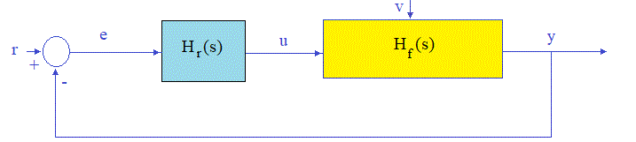
Partea fixata(PF) contine procesul tehnologic(PT) asupra caruia actioneaza regulatorul automat(RA).
Procesul tehnologic(PT) este comandat de catre regulatorul automat(RA) prin intermediul elementelor de executie(EE).
Citirea marimii reglate(y - variabila de proces) se face prin intermediul traductorilor(T) care ofera marimea x proportionla cu marimea y adica x=k*y.
Putem deci reprezenta un SRA sub forma:
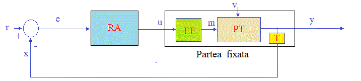
Unde:
RA - Regulator automat;
PT - Procesul tehnologic;
EE - Element de Executie;
T - Traductor;
Marimile definite:
r - Referinta;
e - Eroarea;
u - Comanda;
m - Executia;
v - Perturbatia;
y - Variabila de proces(Marimea reglata, iesirea);
x - Reactia;
Mult mai fireasca ar fi reprezentarea in care procesul tehnologic(PT) ar fi reprezentat separat, la care se adauga in
mod firesc dispozitivul de automatizare. Aceasta reprezentare ar corespunde dezvoltarii firesti a sistemelor tehnologice in care initial se realizeaza
un proces tehnologic dupa care se automatizeaza.
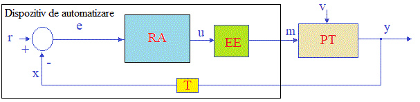
1. Sisteme de reglare automata - PID
In urmatoarela aplicatii vom realiza un SRA-uri (sisteme de reglare automata) de tip
PID (proportional-integrativ-derivativ) discret.
Un SRA de tip PID mentine valoarea iesirii y in jurul valorii de referinta r prin intermediul comenzii u. Comanda u este generata deSRA prin intermedul unei functii de transfer caracterizata de trei constante: kp,ki,kd si Ti.
kp este constanta - Proportionala (cu valori intre 0-4)
ki este constanta - Integrativa (cu valori intre 0-5)
kd este constanta - Derivativa (cu valori intre 0.2-2)
Te este timpul de esantionare (250 ms adica timpul de Refresh al HMI)
In imaginea de jos este reprezentata comanda u (cu rosu) si iesirea y(cu verde).
Sistem de Reglare Automata PID
r:
kp:
ki:
kd:
Pentru implementarea regulatorului PID se va folosi metoda “Velocity”. Conform acesti metode, comanda u
din momentul k depinde de referinta r, de iesirea y si de e_v (e, din momentul k-1). Intervalul de timp dintre momentul k si momentul k-1
este Te(Timpul de esantionare).
Comanda u se obtine prin insumarea elementului proportional, integrativ (inte) si derivativ(deriv) astfel:
e = r - y;
inte = inte + e * Te;
deriv = (e - e_v) / Te;
u = kp * e + ki * inte + kd * deriv;
e_v = e;
In care:
y este iesirea din pasul curent
r este valoareareferinta
e este eroarea calculata (r-y) din pasul curent
e_v este valoarea calculata pentru e in pasul anterior
u este valoarea calculata pentru comanda din pasul curent
kp este constanta - Proportionala (cu valori intre 0-4)
ki este constanta - Integrativa (cu valori intre 0-5)
kd este constanta - Derivativa (cu valori intre 0.2-2)
Te este timpul de esantionare (250 ms adica timpul de Refresh al HMI)
Variabila de proces adica iesirea y reprezentand totodata marimea reglata ar trebui sa provina din procesul tehnologic(PT) prin
plasarea unui traductor. Avand in vedere functia de transfer Hf(s)=1/(5s+1), vom simula y cu relatia:
y = (u*Te + 5 * y_v) / (5 + Te);
In care:
y este valoarea calculata pentru iesire din pasul curent
y_v este valoarea calculata pentru y in pasul anterior
u este valoarea calculata pentru comanda din pasul curent
Te este timpul de esantionare (250 ms adica timpul de Refresh al HMI)
Dupa cum se observa iesirea y depinde de de y_v(y din pasul anterior), comanda u din pasul curent si de timpul de esantionare Te
Realizam aplicatia Pid_v00 si plasam urmatoarele elemente pe "Front Panel":
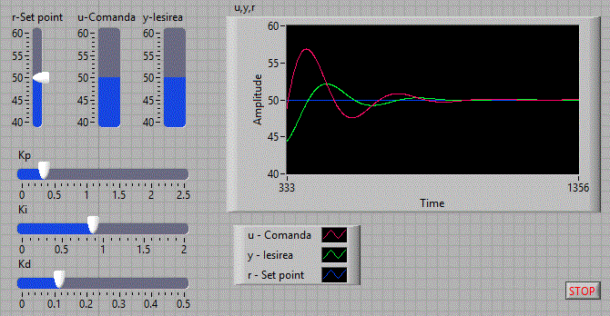
Implementam expresiile pentru comanda u si iesirea y in "Block Diagram":
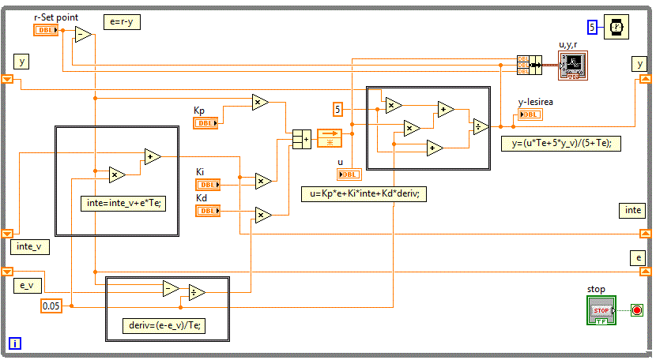
Utilizare "Formula Node" pentru a implementa Regulatorul PID
In aplicatia Pid_v01 incercam sa simplificam "Block Diagram" folosind "Formula Node".
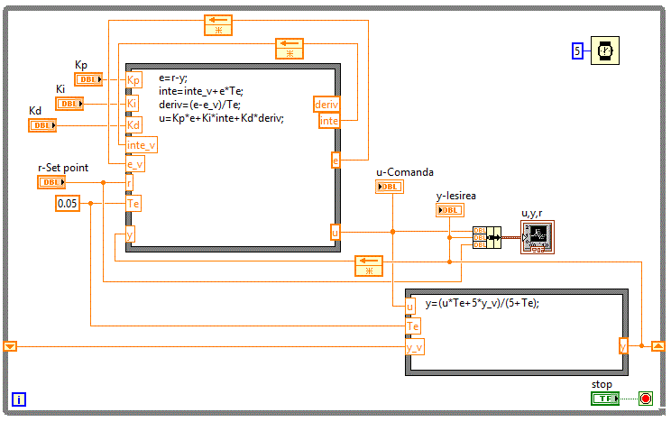
Crearea unui Sub Vi pid
In aplicatia Pid_v02 se foloseste Sub VI-ul pid
Obtinindu-se astfel un "Block Diagram" mult simplificat.
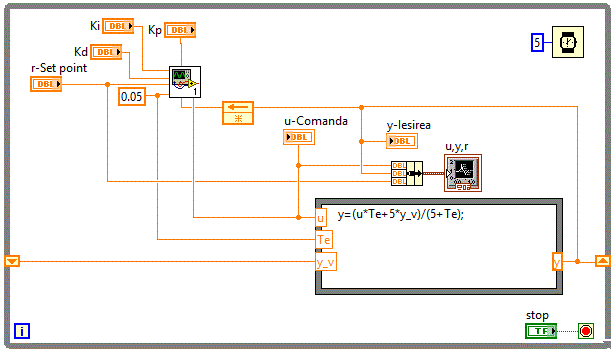
Urmatoarele aplicatii vor putea folosi Sub VI-ul pid , dezvoltarea acestora fiind
mult simplificata prin folosirea acestui Sub VI.
Controlul nivelului unui lichid intr-un rezervor
Pe baza aplicatiei anterioare vom realiza aplicatia Regl_nivel
pentru controlul nivelului unui lichid intr-un rezervor.
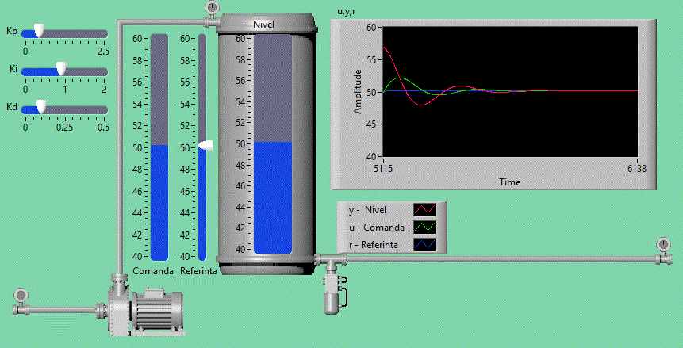
"Block Diagram" fiind similara cu "Block Diagram" a aplicatiei anterioare.
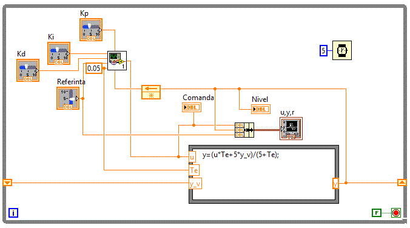
Imaginea de fundal se pregateste folosind diverse editoare dupa care se copiaza in Front Panel.
2.Utilizarea modulullui PID din Control and Simulation
Vom utiliza in continuare modulul Functions->Control and Simulation->PID care sa gaseste in versiunile mai noi
incepand cu LabVIEW 2020.
In aplicatia Pid_v20 se foloseste Sub VI-ul Functions->Control and Simulation->PID.vi pentru a realiza un
SRA PID.
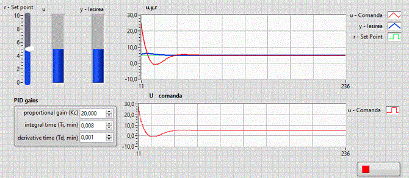
"Block Diagram" fiind:
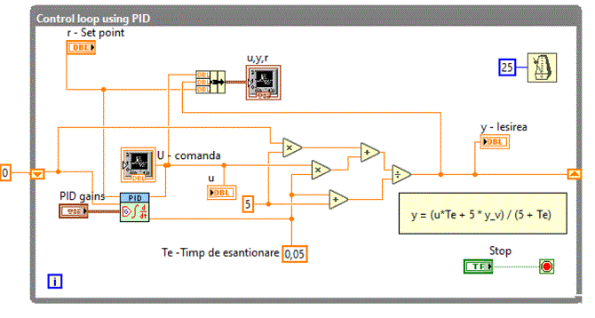
In aplicatia Pid_v21 incercam sa simplificam "Block Diagram" folosind "Formula Node".